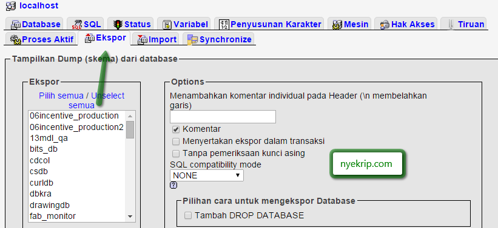

Sangat disarankan untuk membuat backup secara teratur dari database kita, dengan membuat backup akan memungkinkan kita untuk membuat file cadangan untuk berjaga-jaga jika nantinya terjadi kerusakan pada database utama. Pada tutorial cara backup restore database MySQL PHP ini kita berlatih untuk menggunakan beberapa teknik dalam membuat backup sekaligus restore tabel dalam database MySQL.
Ada tiga cara yang dapat kita gunakan untuk membuat backup dari database MySQL.
Kita dapat menjalankan perintah SQL SELECT
untuk membuat backup dari setiap tabel. Untuk mengambil hasil
dump database yang lengkap, kita perlu untuk membuat query
pada setiap tabel. Setiap tabel akan disimpan ke dalam file teks
secara terpisah, jika tidak ingin repot silahkan langsung menuju cara
kedua dengan MySQL binary mysqldump.
Coba contoh skrip sederhana dibawah ini untuk menggunakan SELECT INTO OUTFILE sebagai permintaan untuk membuat backup tabel :
1
2
3
4
5
6
7
8
9
10
11
12
13
14
15
16
17
18
19
20
21
22
|
<?php
$dbhost = 'localhost';
$dbuser = 'root';
$dbpass = '';
$koneksi = mysql_connect($dbhost, $dbuser, $dbpass);
if(! $koneksi )
{
die('Gagal Koneksi: ' . mysql_error());
}
$table_name = "karyawan";
$backup_file = "/tmp/karyawan.sql";
$sql = "SELECT * INTO OUTFILE '$backup_file' FROM $table_name";
mysql_select_db('test_db');
$backup = mysql_query( $sql, $koneksi );
if(! $backup )
{
die('Gagal Backup: ' . mysql_error());
}
echo "Backup Berhasil\n";
mysql_close($koneksi );
?>
|
Skrip diatas akan secara otomatis membuat file bernama karyawan.sql dalam folder tmp, file inilah yang menjadi backup dari tabel karyawan.
Pada saat kita ingin mengembalikan (restore) data hasil
backup, kita hanya perlu untuk mengambil dan
menjalankan kembali file hasil backup yang telah kita
buat sebelumnya. Untuk mengembalikan data, kita hanya
perlu menjalankan LOAD DATA INFILE seperti ini:
1
2
3
4
5
6
7
8
9
10
11
12
13
14
15
16
17
18
19
20
21
22
|
<?php
$dbhost = 'localhost';
$dbuser = 'root';
$dbpass = '';
$koneksi = mysql_connect($dbhost, $dbuser, $dbpass);
if(! $koneksi )
{
die('Gagal Koneksi: ' . mysql_error());
}
$table_name = "karyawan";
$backup_file = "/tmp/karyawan.sql";
$sql = "LOAD DATA INFILE '$backup_file' INTO TABLE $table_name";
mysql_select_db('test_db');
$restore = mysql_query( $sql, $koneksi );
if(! $restore )
{
die('Gagal load data : ' . mysql_error());
}
echo "Load data berhasil\n";
mysql_close($koneksi);
?>
|
MySQL menyediakan satu utility yaitu mysqldump untuk melakukan backup database. Menggunakan cara ini, kita dapat mengambil database dump lengkap hanya dalam satu perintah.
Coba contoh skrip sederhana berikut untuk mengambil database dump:
1
2
3
4
5
6
7
8
9
10
11
|
<?php
$dbhost = 'localhost';
$dbuser = 'root';
$dbpass = '';
$backup_file = $dbname . date("Y-m-d-H-i-s") . '.gz';
$command = "mysqldump --opt -h $dbhost -u $dbuser -p $dbpass ".
"test_db | gzip > $backup_file";
system($command);
?>
|
Jika Anda memiliki phpMyAdmin, maka sangat mudah bagi anda untuk membuat file backup dari database.
Menggunakan phpMyAdmin
Untuk backup database MySQL dengan menggunakan phpMyAdmin klik pada link “eksport” pada halaman utama phpMyAdmin. Pilih database yang ingin di-backup, pilihlah opsi SQL yang sesuai dan masukkan nama untuk file backup. Jika anda belum punya, silahkan download di halaman web phpMyAdmin.
Happy Nyekrip!
Sumber : Happy Nyekrip!